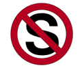
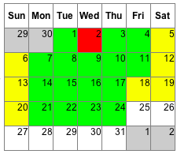

The No  Diet ®
[ An Everyday Systems site ]
The No S Diet, also known as the "Grandma Diet," the "Why Didn't I Think of that Diet," and the "No $ Diet" is a program of systematic moderation I invented for myself that seems to work for similarly minded people.
No funny science or calorie accounting involved, just a few simple and mnemonic tricks for building sustainable "good enough" eating habits.
There are just three rules and one exception:
- No Snacks
- No Sweets
- No Seconds
Except (sometimes) on days that start with "S"
That's it.
Do that and you'll probably lose most if not all of your excess weight. For subtle pyschological reasons I go into below, you'll probably start eating better as well as less. And you'll enjoy eating a whole lot more.
How could something this simple possibly work? Precisely because it's simple -- or rather, following the Einsteinian dictum, "as simple as possible, but not simpler." For all its folksy charm, there's a lot of serious, practical wisdom packed into those 14 words. Read on if you need more convincing...

[ Buy the book ]
There's a No S Diet book out -- published by a real publisher that you've actually heard of. Buy it from Amazon.com, Barnes and Noble, Penguin or your local bookstore.
Non-US No S Dieters can find the book at amazon.co.uk (United Kingdom), amazon.de (Germany), amazon.ca (Canada), angusrobertson.com.au (Australia), and amazon.jp (Japan).
You can also get eBook versions for your Kindle, Palm or sony eBook reader.
While it's true that the book doesn't contain any Secret Information I don't freely give on this website, I do think it has some added value: it's more grammatical, more in depth, more tightly organized, and more portable. And, of course, it's a much appreciated "thank you."
Why are other diets so lousy?
Most diets today can be divided into two categories:
- Pseudoscientific forbidden foods diets that pretend that you
can go on being a glutton as long as you confine your gluttony to a
particular class of foods while completely excluding others (no
agreement on what these particular kinds of foods are, of course).
- Diets that require you to be a full time calorie accountant.
The forbidden foods diets are patent nonsense. They contradict one another, go in and out of fashion every ten years, and never seem to gather any serious scientific support. You won't stick with one of these because not being able to eat whole categories of food is a real drag. At the outset, it might seem worth it to trade pasta for unlimited steaks (or vice versa), but it gets old fast. And it might even make you sick.
It's funny that these diets masquerade as scientific, because psychologically they rely on the most primitive magicism: magic potion foods that are good for you and can be gorged on with impunity, and cursed poison foods that corrupt with a mouthful (carbohydrates and fat are the two biggies, alternating roles).
They pretend that you don't have to do the hard work of fundamentally altering your habits. "It's not your fault," they say, "it's the food's fault! Just eat this other magic food instead..." It's so temptingly flattering and easy. Alas, it isn't true and doesn't work, and in the final analysis it isn't even flattering.
The calorie accounting diets are time consuming and joyless. You won't be able to stick with one of these because it will make you miserable. Besides the sheer tedium of compliance, if you come to think of food as fuel, a mere quantity, you'll come to loathe it -- and your number crunching-munching self.
The situation is complicated a little by hybrids (i.e., counting taboo food units -- the worst of both worlds) and fluff. Horrified scientists occasionally publish sober descriptions of what the ideal human lab rat should eat, but these fail so miserably as prescriptions that they're not even worth considering.
The truth is, pretty much any diet will lose you weight if you stick with it. The problem isn't how to lose the weight. The problem is how to stick with the diet. According to the FDA, 95% of dieters fail to do this for more than a few months at a time. You need a diet that acknowledges this grim statistic and targets the real culprit: not your belly, but your mind.
Why is this diet so much better?
Because it is simple, sustainable, and you aren't really depriving yourself of anything. You don't have to sacrifice anything -- not time, not health, not money, not any delicious thing. No pleasure is denied, just unobtrusively delayed and contained. Served up on the platter of limited opportunity, each pleasure becomes even more enjoyable than it was before.
There are no magic potions and there are no poisons. You are targeting just the culprit, just the bad habit of overeating itself.
Ask yourself if you can imagine staying on a particular diet for the rest of your life. If not, don't bother starting, it's a waste of time and will.
That's much too rational and straightforward. Come on, REALLY, why is this diet so much better?
You wouldn't take diet advice from a fat person, why take it from a fat book? Weighing in at just 14 words, the No S Diet is the ultra featherweight of diet plans.
(Yes, I know, I've now written a book myself -- but it's a wee little thing. You can easily read it in a day. And of course, for the bare essentials of the system, all you need is the cover.)
Is there any scientific evidence that this diet works?
Absolutely none. But I'm not aware that I have any competition in this regard.
It is more or less how billions of thin people around the world have eaten for millenia, if that counts for anything.
Is there a cheesy testimonials page like all other diets have?
(relatively) New! Yes! Right here. See the bulletin board for a more balanced (if less concise) view.
How do you pronounce "No S Diet?"
It's a pun, you can pronounce it the Noes Diet, the No Es Diet, or even the No Esses Diet, depending on which aspect of the pun you feel like emphasizing.
I used to spell it all one word, "nosdiet," for easy googling, but no one else did, which kind of defeated the purpose, so I stopped. You'll just have to google with quotes.
What days start with "s"?
Saturday, Sunday and "Special" days. Special days include (your) national and (your) religious and (your) close family's and friend's birthdays. My apologies to atheists and non-native English speakers. A lean and hungry look becomes you.
Sick days also start with S. Though I don't imagine you'll be too hungry if you're really sick, you officially have license to do whatever it takes to get better.
"Days that start with S" are discussed frequently on this site, and since that's a bit of a mouthful, you'll usually see them referred to them as S-days. Days that do NOT start with (even more of a mouthful) are referred to as N-days (i.e., NON-S days). You can also think N as standing for "normal."
Non-weekend-S-days are sometimes referred to as NWS-days. Though I coined this awful term myself, I think it's clearer to just call them "special" days.
What do you mean by "sometimes"?
I stuck the word "sometimes" in the exception to remind you not to be an idiot on S-days. It's been my experience that the good habits you build on the non-S-days will see you through the S-days without too much excess. My S-days tend to be no worse than my pre-No S Diet ordinary days.
(relatively) New! "Don't be an idiot" insufficiently specific for you? Read this discussion for a little more guidance.
Note: readers of the No S Diet book may have noticed that the word "sometimes" didn't make it to the print version. The reason for this was mostly typographical (the 14 word version with "sometimes" just didn't fit as well on the cover). And while some people can using the extra reminder, "sometimes" isn't really logically necessary -- OF COURSE you shouldn't eat snacks, sweets and seconds ALL THE TIME on S-days. I've kept the "sometimes" on the web site so pre-book No S dieters don't feel like I've changed the system out from under them, and as far as I'm concerned, both the 13 and 14 word formulations of the system are equally valid and "canonical" (more on this issue here).
What do you mean by "seconds?"
As I mentioned in a post to the No S diet group, by "no seconds," I officially mean one physical plate, and I think for beginners especially it's good to stick with this, even if it means a fairly overloaded plate. If the amount of food on your one plate is a little bestial and disgusting, that's part of the educational process.
What do you mean by "sweets"?
I mean something whose principal source of calories is sugar. Go ahead and put sugar in your coffee or oatmeal; you have my blessing. Of course fruits are fine.
But beware of soda and corn syrup "juice" drinks. I'm not just being a killjoy; adolescent Americans get an estimated 13% of their total calories from such nutritionally bankrupt "liquid carbohydrates."
I wouldn't worry too much about borderline foods like yoghurt and peanut butter and jelly sandwiches. If these are a problem for you, i.e., you eat them every day and lay it on thick, then make them esses. If not, don't. Just by targeting the really egregious offenders you'll be cutting out a lot of calories. And you'll be that much more likely to stick with the plan. If you're like most first worlders, it's a little revolting to think how much unambiguously crappy food you consume. So forget the borderline cases, the clear cut cases are 80% of the problem and 0% of the headache.
Do you know how many pounds of sugar the average American ingests each year? According to the USDA's Economic Research Service, 105 pounds (2001). That's about 20% of total calories. You could make a snowman out of that. That's less than 2 years till you've eaten your body weight in sugar. If you're a real whopper, chances are you eat even more sugar than that, so I figure it works out about the same. And this is a pretty conservative number. The ERS assumes that over 40 pounds of "delivered" sugar is "lost" (147 delivered, 105 ingested), which I find a little hard to believe, but I guess we're wastrels as well as gluttons.
How do you think that compares with the sugar intake of our ancestors? We don't have to go back to hunter gatherer times to find a striking contrast, or even before Columbus (when it was close to nil because there was no refined sugar in most places). 1821 will do: 10 pounds (that's delivered, not ingested!).
You don't need to be an Atkins nut to see there's a problem here. Indeed, why bother taking it to the next level, by severely restricting carbs in general, with all the dubious health issues that entails, when there is plenty problem here, at the sugar level? If orange juice is really your problem, you don't have much of a problem.
I'm not some food hating, pleasure begrudging voice in the wilderness. I'm not telling you to give up sweets completely. I love sweets. But I love them even more on S days. That way I can love them unreservedly, without also hating them for what they do to my body. On S-days, I make sure to pick out something really nice, to make it count. Sweets weren't designed for daily, routine consumption, physically or spiritually. Deserve your desserts. They taste much better that way.
Does fake sugar count as an "S"?
As I mentioned in a post to the No S Diet group, I would avoid fake sugar products for 3 reasons.
- they tend to be pretty disgusting
- you *know* that in 10 years scientists are going to discover that they're even worse for you than real sugar.
- you might be fooling your taste buds, but you're also fooling the habit forming portion of your brain. It's bad psychology, and the whole premise of the No S Diet is that psychology is the most important part.
So does it officially count as an S? No. But I'd be surprised if you can eat a lot of it without reverting to genuine S. Naturally slim people do not cram themselves with diet products. Neither should you.
Aren't you worried about fat?
I don't want to seem like I'm coming down as "pro-fat" in the carbs vs. fat debate. I think the evidence strongly suggests that too much fat is bad for you. But I also think that much (if not most) of the fat people consume is in the form of snack foods (chips, crisps, popcorn, etc.) and sweets (candy bars, ice cream, pop tarts, Capt'n Crunch, cake, etc.), which are restricted by the No S Diet (these also tend to be the worst kinds of fat). So while the No S diet does not address fat explicitly, it does so as a kind of side effect.
Fat is a more complex issue than sugar. There are good fats and bad fats, and it's often less clear which foods are high in fat (whereas sugar tends to jump right out at you). Simplicity and clarity are important. If you have a complicated diet that is 100% in sync with the latest nutritional research and covers every theoretical base, it won't do you any good if you can't stick with it (never mind that the latest nutritional research is a rapidly moving target). Zero percent of a hundred is zero. An eighty percent solution that you can actually stick with is infinitely preferable to that.
I also don't think that anyone in the medical profession would suggest regularly going five straight days without any fat. Unlike added sugar, it has some nutritional benefit; the body does need it.
What do you mean by "snacks?"
Snacks are "when," not "what." For No S Diet purposes, anything you eat between meals is a snack. The kind of food has nothing to do with it. So pretzels with lunch is lunch. Maybe not a particularly healthy lunch, but the No S Diet delegates that particular micro-decision to you.
What about healthy snacks?
Eat healthy meals. If you know you have just three, you'll make them count. I'm perfectly aware that an orange between meals is not going kill you, that, taken in itself, it's perfectly healthy. But the idea is to have the orange instead of, not in addition to, and in justification of, some unhealthy part of your meal. The problem is primarily one of self-discipline, and if you start making all kinds of exceptions, you'll fail.
But every other diet guru tells me I SHOULD snack!
"No snacks" is the rule that people seem to have the most trouble accepting. But I think it's also the most important rule.
People act as if snacking is this natural thing that would be cruel to deprive themselves of. But the truth is, historically speaking, snacking is a very recent eating behavior. No one did it to any degree worth mentioning until very recently - when we promptly started getting fat. According to an analysis of USDA food consumption data by David Cutler at Harvard University, 90 percent of the increase in calorie consumption in men in the United States since 1977 has come from between-meal eating. For women, it's 112 percent -- calories from meals have actually gone down. (Journal of Economic Perspectives "Why have Americans Become More Obese?" Page 101)
So with this one rule, just two words, you've got a 90-plus percent solution to the problem of over-consumption.
You'll find the same correlation when you look at the issue across societies: obesity rates move in lockstep with calories derived from snacking. The skinny French snack on average less than once a day compared to our three. The even skinnier Chinese barely snack at all.
The reason snackers eat so much more food is simple: it's impossible for them to keep track of how much they're eating without resorting to unsustainable behaviors like counting calories. They can't eyeball excess anymore, as they could with discrete meals. Excess sneaks right past them in lots of tiny increments, none of which seems like much in itself, but adding up, at the end of the day, to a tremendous amount.
Why is it that despite these pretty shocking statistics you almost never hear anything but pro-snack messages? Simple. "Follow the money." You can't sell "no snacks." Snacks, on the other hand, especially the booming "healthy" snack segment, are a multibillion-dollar industry. And the surest sign of having made it as a diet guru these days is having your name on an "energy bar" of some sort, so they're all in on it, too.
(Lengthier anti-snack jeremiad here)
Please tell me EXACTLY every single food I can and can't eat!
No. Sorry. Don't have the time for that. And it's really not necessary. A "sweet" as I've defined it above means "lots of sugar." If you have to wonder, it's probably OK.
Just about every diet guru publishes a list of permitted and forbidden foods. And they're bestsellers. People buy millions of copies of these lists. I am utterly baffled by this phenomenon.
I'm baffled because it's so utterly hopeless an enterprise; there are, for all practical purposes, an infinite number of foods. I'm baffled because the things that wind up being forbidden are often so absurd: beets, for example. I guarantee you, no one ever got fat from eating beets. If you see a fat person eating beets, that's not why he's fat. Carrots, formerly the quintessential health food that people used to carry around in zip lock bags as a healthy snack, are now vegetable non grata. But most of all, I'm baffled that anyone really imagines they will play scavenger hunt at the supermarket for more than a month or two. It shows an utter ignorance of human psychology.
And yet, as I mentioned, people buy millions of copies of these lists. They must get something out of it. Maybe they get an "insider information" thrill out of reading these oddball restrictions and think "whew, glad I know about beets. That would have killed me for sure." What they don't get is any thinner. These books may be good for a thrill, but they are psychological suicide as far as losing weight is concerned. Who is really going to run around a supermarket with a book in hand? For a week, maybe. For a month, maybe. But that's it. At that point they'll feel justly overwhelmed. But maybe that's all they ever wanted.
It's not the carrots, it's the carrot cake (etc.). More to the point, it's you eating so damn much of the carrot cake. People refuse to look at the obvious suspects because the implications are so unflattering to themselves -- that they simply eat too much and that there is no "stab in the back" substance to blame. The forbidden food diets pander to this suicidal vanity. They are not just harmless (if unmaintainable) games. They are dangerous distractions. They keep you from seeing and confronting the real problem. This isn't "murder she wrote." It's not the mousy schoolmarm whom no one suspected who winds up having "dunnit." This is a brazen attack in broad daylight. Take a look in the mirror. The guilty party is staring right at you.
Still want to count carbs/calories/fat/whatever after all this? Save your money and look at the USDA's nutrient data library. Endlessly fascinating, if you have nothing better to do. Those bestselling guru lists are just less accurate/comprehensive versions of this.
What about nutrition?
The No S Diet is a framework for controlling excess. Beyond that it makes no stipulations about your nutritional or gastronomic choices. That doesn't mean they're not important, they're just separate issues. Fight one enemy at a time, not three at once.
That said, I find that having a limited number of limited quantity meals makes me take them more seriously, both from a gastronomic and a nutritional point of view. Pretty much every meal I eat is delicious or healthy or both.
If you feel the need to take a systematic approach towards nutrition too, be my guest. The No S Diet is compatible with pretty much every other diet plan I've come across. You can be a No-S/Vegan if you want. You could even do No-S plus Atkins, or No-S/Zone if you want to hedge your weight loss bets (though I think it's becoming increasingly clear these last two examples are emphatically *not* going to help you in the nutrition department, if at all).
What about exercise?
Of course you should exercise. Diet can't substitute for exercise. You need to do both. If you're having trouble figuring out what exercise to do, consider walking. If you feel walking is too, well, pedestrian, get over it. Health-wise, it's the best long term exercise you can do, and the only consistently useful or interesting one. If you need more color, you'll get plenty using my homemade exercise device as a supplement.
The No S Diet is about eating in moderation. If you can lose significant weight without exercise, you're not eating moderately -- you're eating immoderately little. That's not sustainable or good.
Don't look at your problem as being too heavy. Look at your problem as two behavioral problems 1) eating too much 2) moving too little. Both of these need to be solved. Solving just one "too much" isn't a real solution.
I know people hate to be told they ought to exercise, but I really think coming at it from these two directions makes it much easier, because you don't have to do that much from either. You don't need 3 hour workouts. Try 14 minutes.
Will this diet help me look like Kate Moss?
No. It will help you attain and maintain a healthy and therefore presumably attractive weight. I'm not sure it's healthy to look like Kate Moss.
It won't help you look like Victoria Beckham, known as Posh Spice, Courtney Cox, or Calista Flockhart, either (I just threw that in there for the search engines. Sneaky, yes, but who knows many young lives l'm saving).
WARNING: one poster to the bulletin board warns that a diet like No S might be open to abuse by people with eating disorders. Please tread carefully and consult your doctor if you think you might fall into that category.
What if I am an idiot and insist on following the letter of the law but breaking it in spirit by (say) eating a gallon of ice cream every S-day and counting my second cousin's hamster's birthday as an S-day?
Then I can't help you. You will be fat and die young.
Seriously, this is less of an issue than you think. I haven't heard of anyone messing this diet up because they followed the rules during the week and overbinged on the weekends. But I have heard from plenty of people who anticipate this being a problem, burden themselves with weekend restrictions to prevent it, and then crack during the week because it's too much. S-days are a necessary reward and safety valve. As a group member succinctly put it:
S days should be S days so N days aren't.
("N-days" are short for "non-S-days")
What if I screw up?
Say "I screwed up" and try not to do it again. Don't try to compensate for your screw up by extra deprivations -- self-revenge will only make you resentful and that much more likely to quit altogether. This diet isn't about perfection, it's about staying healthy. It's about what you do most of the time, not about achieving some kind of world's record.
The other advantage of this attitude is that it deprives you of a very seductive excuse -- I can cheat because I can make up for it later. The knowledge that there is no make up test, that you have only one chance to do each day right, will make you that much more serious about passing the first and only time around. It's a principle worth applying to other aspects of life.
Be strict before you screw up, not after, and you'll soon find you have very few "after"s to worry about.
But I'm genetically fat!
It's possible, but you probably aren't. If you're like most overweight people, it's no mystery why you're fat. You're fat because you eat too damn much. I don't care whether it's carbs or hydrogenated oils or granola bars, you just eat a lot of it. Maybe you don't metabolize your food quite as efficiently as your skinny neighbor, I'll grant you that (maybe), but the fact remains, you eat too much. I don't mean to be insulting, I used to eat too much too. I put it this way because you're never going to lose any weight if you pretend that there are more complex and flattering reasons for your condition. So get this genes stuff out of your head, it's probably an excuse.
Consider this: according to the CDC, the obesity rate in the United States has doubled since 1980. Rapid mutation? Sorry folks, evolution doesn't work that fast.
If you're still convinced that you've been doomed by your genes, view this diet as an experiment. If you can stick with it for 6 months and not lose a significant amount of weight, then you can plead genetics with a clear conscience. And I suspect you'll be at least a somewhat skinnier genetically fat person.
So why have people gotten so fat over the last 30 years?
The faddists say, rather predictably, though with disturbingly little fellow feeling, that the current obesity epidemic is the result of the last fad; i.e., that we're fat because of the low fat craze and now need a high fat craze to undo this (any guesses what the next fad is going to claim?). Here's my question: do you really think the decisive factor was people wolfing down fat free (and don't forget sugar free) cookies with a feeling of impunity? Sure people did this, to an extent. But they certainly also had plenty of super sized fatburgers to wash it all down. At least, it doesn't seem that McDonalds (NYSE: MCD) and Krispy Kreme (NYSE: KKD) were particularly poor investments during this period.
But I don't want to say with the paranoids "it's all the evil corporations' fault!" In fact, I view both of these stances (fad vs. fad, corporate evil) as manifestations of the real problem: a catastrophic loss of belief in the idea of personal responsibility. People today are not merely irresponsible: they are anti-responsible. They view the idea that they are responsible for their condition as offensive. It seems ridiculous to them, beneath contempt. And it is precisely this attitude that has been doing them in on the diet front and so many others.
But I'm a grazer!
This is a more sophisticated excuse. Under laboratory conditions, people who eat a controlled amount of calories over the course of many small meals may metabolize them more efficiently than people who eat the same amount of calories in the traditional three. This is the principle behind the 3 hour diet. Where's the rub? In real world conditions, people who eat more frequently than the traditional three square meals wind up just plain eating more food -- substantially more. And despite their metabolism's scrambling, they chunk up. The No S Diet isn't a lab diet, biology divorced from psychology. It's a real world diet, built to withstand the pressures of your stubborn, sneaky mind.
Scientists who study snacking behavior "in the wild" concur. From a 2005 article in the International Journal of Obesity:
Obese subjects were more frequent snackers than reference subjects and women were more frequent snackers than men. Snacks were positively related to energy intake, irrespective of physical activity. Sweet, fatty food groups were associated with snacking and contributed considerably to energy intake. Snacking needs to be considered in obesity treatment, prevention and general dietary recommendations.
"Energy intake" makes it sound so positive -- they mean calories.
From a 2002 article in Medicina Clinica:
Snacking was positively associated with a higher probability of gaining weight among men (OR = 1.88; CI 95%, 1.40-2.53) and among women (OR = 1.38; CI 95%, 1.10-1.73). CONCLUSIONS: Our data suggest a direct association between snacking and weight gain in middle-aged people.
Indeed, discreet "snacking" is probably the wrong word for the continuous, automatic eating most of us do nowadays. From a 2004 article in Harvard Magazine:
"The French explanation for why Americans are so big is simple," said Jody Adams, chef/partner of Rialto, a restaurant in Harvard Square, speaking at the Oldways conference. "We eat lots of sugar, and we eat between meals. In France, no one gets so fat as to sue the restaurant!" Indeed, the national response to our glut of comestibles is apparently to eat only one meal day all day long. We eat everywhere and at all times: at work, at play, and in transit.
Even if you aren't one of these unconscious permasnackers, but count every calorie and want to "graze" to better trick your metabolism, snacking isn't a good idea. The problem with such grazing is that it's impossible to get a sense of how much you are eating without paying an exorbitant amount of attention -- counting calories, points, etc. Doing all this math is way too much conscious overhead to sustain for the long term, and it's not something you can automate into unconscious habit.
But I'm an exception!
So is everybody else. And even if you truly happen to be the one, it isn't useful to think this way.
Let me put it another way: chances are you're deceiving yourself. And on the odd chance that you aren't deceiving yourself, maybe you should be, the other direction.
People have done all kinds of remarkable things because they thought they could. People routinely fail to do quite ordinary things because they assume they can't.
But I want an excuse, not a solution!
It sounds crazy, but a lot of people think like this. They'd prefer to stay fat and blame McDonalds or refined carbohydrates or hydrogenated vegetable oil or their lousy genes or anyone and anything but themselves. I'm not saying these things aren't factors, but they are not the decisive factor. The decisive factor is just that: human decision.
Don't be afraid of responsibility. Responsibility can be liberating. If it's your fault, then chances are you can fix it. If it's not your fault, then you probably can't. Would you really prefer that a problem be insoluble than have to work to fix it? And yes, thinking makes it so.
Health aside, I'm amazed at how many people prefer to trade their sense of free will and human dignity for carte blanche to fail. It's like Esau selling his divine birthright for a mess of pottage, choosing to be a slave because it is easier than being free. If you're one of those, keep searching, this diet isn't for you.
How much less will I wind up eating?
I have no idea. It depends. But one nosdieter has worked it out pretty clearly for himself (see original post in context):
Here's an illustration of what you were eating before. I'm an insulin dependent diabetic using an insulin pump. For every gram of carbohydrate I eat, I infuse a set amount of insulin. I know the amount I infused before No-S and the amount I infuse now. Before No-S, I infused on average 45 units a day. Now I use about 32 units a day. that's what... <calculating here> about a 30% drop? A 30% drop in carbohydrate means a more than 30% drop in total calories since the crap I ate between meals contained more fat than what I eat at meals, in general. A 30-40% caloric reduction just by cutting out between meal eating and seconds. It's no wonder it works.
What is the best way to determine my "ideal" weight?
I don't think there is much point in having an ideal weight. Have ideal behavior -- habits of moderate eating and exertion. Whatever you weigh then is ideal.
Are there any side effects?
Yes. By setting your willpower up to succeed, and succeeding a little bit every day, you will build up general purpose willpower. It's like doing 50 spiritual pushups every morning. Contrast this with the effects of the repeated failures of willpower associated with mainstream yoyo dieting.
You will also start to enjoy food again, instead of merely obsessing over it.
Can I take my Sunday Thursday? (etc.).
Not officially.
Can I do a "some-S" diet?
You can do whatever you want, I'm not going to excommunicate you, but this isn't a good idea. No-S isn't that hard. Try doing it strictly for 3 weeks, that's about how long it takes to form a habit. You'll be surprised.
That being said, the esses don't depend on each other. Each makes sense on its own, and each should be helpful on its own. Do what's possible and necessary for you. Dieting in a "half-essed" manner, as a group member put it here and here, can have wholly satisfying results -- as long as you're clear about which half (or third) and are no less diligent in sticking to it.
I've often thought that gradually progressing one S at a time might be a good way to become a full no-esser, say start with no sweets for a week, then add no seconds the next week, then no snacks on week 3 (or go even slower and give each the full magic habit-building three weeks). That way you could build willpower and habit even more incrementally. Unfortunately I'm not aware that anyone has successfully done this [ update: it seems like someone has (and rather successfully!) ] . I think the trouble is that even full no-s is slow in terms of yielding measurable results, and lack of patience is an even bigger problem for most people than lack of short term willpower.
Fence around the Diet
There's a Jewish expression, "Fence around the Law," which means don't do anything that might possibly be interpreted as giving even the appearance of violating sacred law. It's a principle that has its use even with profaner stuff. When your habit is young, be as strict as you can be, comically strict even. Only when you're strong, when the habit is largely unconscious, can you afford stretchers like the above.
It might seem counterintuitive, but strictness makes things easier. There is no decision to be made, no wrangling, no "can I? can't I?". You're pre-disapproved, so forget it and move on to something else.
I hope no one will consider it blasphemous that I apply this religious principle to profaner matters such as weight loss, because I think it's based on a profound and useful psychological insight, and it's with great respect that I repurpose it here.
(more on the advantages of strictness here)
I love the No S Diet, but my doctor says I need to eat 4/5/6 meals a day because of my medical condition!
The No S Diet has a little known loophole just for you. If you look closely at the site, you'll notice that nowhere does it specify the actual *number* of meals. Now most people will make a certain assumption, and most people had better stick with that assumption. But if you have a medical condition that requires you to eat more often, you can still do so and be a proud No S dieter. Just make sure to figure out what number of meals is right for you, stick with it (no changing the magic number every day), and invest in some really small plates. And talk to your doctor, of course. As for the rest of you, pretend you never read this. It's for people with doctor's notes only.
Are there any No S Diet recipes?
No. Have you ever eaten a meal cooked from a recipe in a diet book? My experience has been that they're pretty disgusting. Diet books tend not to be written by people who actually like to eat. Besides, the No S Diet iet isn't about what you eat. It's about when you eat. You can eat anything you want -- at the right time. So use your normal cookbook. It's No S Diet approved.
Recipes do make great filler, however, which I'm sure is why diet books are so full of them.
Gratuitous potshots at low carb diets
Low carb diets, whether Atkins or some spin off, are all the rage today. So they deserve some extra, ahem, attention.
As a friend of mine put it "I refuse to believe that bread, the biblical staff of life, the food that sustained our ancestors for so many generations, is bad for you."
Amen.
For those of you who are not so up on the bible, consider this: the obesity rates of France, Italy, and Japan are much lower than obesity rates in the United States. Though I don't have precise statistics, I'd bet money that the majority of calories consumed in these countries come from bread, pasta, and rice (respectively) -- the staples for which their cuisines are famous. And we're not talking brown rice, or whole grain bread, or amaranth pasta. We're talking the very refined stuff Atkins and his fellow gurus insist is so evil.
The simple fact is that most people in the world for most of history have gotten most of their calories from carbohydrates, and most of them were skinny (too skinny!). Percentage wise, we eat far fewer carbs than they did. They were too poor to eat much protein or fat. Only rich people had meat regularly. Fat was a luxury; you hunted for eyes of it in your soup.
What our skinny ancestors didn't eat was much sugar. They ate at social meals, not in between. And they were lucky if they had enough for firsts. Sound familiar?
I'm not saying it's ideal to eat a ton of refined carbohydrates. I'm willing to concede that brown rice is (nutritionally) a better default starch that white rice, and I even happen to like it (short grain, at least). But it's not the chief issue, from a weight management perspective. The chief issue is not to eat too damn much, of anything. And the No S Diet helps you do that.
The American Paradox
People talk about the "French Paradox," that the French can eat fatty, carby, delicious food and still stay skinny while health conscious, calorie counting Americans are the fattest people on earth. It seems not only improbable, but unjust. They love their food and stay skinny, we hate our food and get fat.
Sometimes red wine or olive oil or some other miracle ingredient is held to account for this. But the thing is, this phenomenon is not so particularly French. Look to any country where meals and meal times are still largely governed by tradition and you'll find the same thing: people make their food choices based on taste instead of health and somehow stay thin. Japan is often held up as another example. They also have miracle foods. But their miracle foods are completely different from the French miracle foods. And keep in mind that obesity rates in most places are closer to those of France and Japan than to ours. What do all these countries have in common? Not miracle foods. We're the schmucks that believe in miracle foods. What they have in common is traditional structures around when and what and how you eat. The details may differ a little from country to country, but there is a surprising degree of overlap. Eating is social, not solitary. It occurs at set times, not all day long. There is a difference between ordinary, everyday foods and special festive treats. Again, sound familiar? No S is really just an attempt to stand in for such a tradition where it has been corrupted or lost.
The title and some key ideas from this section were lifted from a New York Times Magazine Article.
What about diet bars?
Any diet that sells a bar or a snack food is a total scam. I'd rather eat a snickers bar than a zone bar, because at least then I'd be psychologically budgeting for it. They should call it the self deception bar. The diet bar is what separates the total scams from the mere fads.
Does it matter when I eat my meals?
You only get a limited number, so it makes sense to space them out more or less evenly over your waking hours. For me, that means breakfast at 7:00, lunch at 12:30, dinner at 7:00. I'm not religious about this, but it's usually what I do, and think it's helpful. You don't want to give yourself too long a stretch of time to crave snacks, especially after dinner.
What about drinks?
Sugar drinks, as mentioned above, are out. If you think you'll pop unless you get your pop, have a look at my hierarchy of pop alternatives.
I don't count alcoholic beverages as esses. I usually have a drink or two a day, which I've read is supposed to be very healthy. 2 drinks is my "glass ceiling," however, because I've read (and experienced) that more than that can be pretty awful. If you drink that or less, I don't imagine it'll have much impact from a caloric point of view. If you drink much more, you may have a different sort of problem altogether.
The subject of drinks isn't to be viewed in purely negative terms. It's not just about avoiding liquid calories. Drink water proactively, to ward off hunger. Thirst is often confused with hunger, and a glass of water can be an effective snack replacement. No, it doesn't taste quite as good, but yes it can work.
What about vacation?
This isn't much of an issue for American wage slaves like myself; there just isn't a whole lot of damage you can do in a mere two weeks. Citizens of more enlightened countries may want to consider it more closely. My policy is: vacation days are like non-S days, with extra tolerance for screw ups. There was an interesting thread about this in the discussion group. Apparently it has worked (rather well) for at least one European.
Is this diet compatible with having friends/family/a social life of any kind?
What an odd question! But think about it. Eating is an inherently social activity. Even in our nuclear age, people tend not to eat alone. So why is it no other diet plan seems to consider this obvious and important fact? It's bad enough that you yourself have to eat the nasty fare prescribed by them; there's no way you're going to succeed if you have to convince others to eat it too, or cook separate meals. The No S Diet dispenses with all that. You eat normal food, just like the people you're eating with. You just eat less of it. They don't even have to know you're doing anything different.
No more separate meals. No more awkward excuses at dinner parties. No more family members secretly or not so secretly hoping you'll get it over with and fail already so they can go back to eating normal food again. Who needs this extra stress? Dieting is hard enough without having to convince other people to go along with it.
I can think of other things that start with S...
So can I. S-days are a useful structure for many kinds of habits. Among other things, I use it to regulate my exercise routine.
Diet-wise, people have suggested "soda" (which is technically already a sugar S, but some people can use the extra reminder) and "supersizes," which no one really needs, and fast food junkies especially should watch out for.
Who are you?
I am neither a doctor, a nurse, a dietician, a nutritionist, a personal trainer, nor any other kind of health professional. I AM NOT AN EXPERT. This is a tremendous advantage.
Diet is not a problem that requires specialized expertise. It is a general problem with an obvious solution. If I were encumbered by any form of expertise, this obviousnessness wouldn't be nearly as striking. A doctor cannot convincingly say "DUH."
I am a librarian by training and a computer programmer by accident. I noticed I was getting a little too heavy (borderline obese, actually, if you want to get technical) and came up with this common sense willpower trick. I lost 20 pounds in two months and kept them off without spending too much time suffering or even thinking about it. People I've explained it to have responded enthusiastically and so I thought I'd stick it on the web.
I've since lost an additional 20 pounds (so total progress has been 210 to 170), but to be fair, that may have something to do with the fact that I started doing some exercise. This seems to be my natural, healthy weight. People now describe me as "lean," which is sweet music to a lifelong "husky."
I've been on the diet since late 2001, with no yo-yoing. Unlike most diets, that get more and more insufferable as the gimmick ages, No s gets progressively easier and becomes largely unconscious. At this point I'm about as tempted to break the rules as a devout Hindu is to eat a cow, or a Muslim a pig. It's a great feeling.
(relatively) New! Much as I'd hoped to avoid this, it seems I have no choice. The obligatory before and after shots can be found here
But I am way fatter than you were!
Then you probably eat way more than I did, and will benefit that much more from eating less.
What are other people saying about the No S Diet?
Well, you can always try google.
On March 7th, 2008, the LA Times mentioned it as one of "ten hot diets", and Woman's World did a cover story on the No S Diet in their April 14 2008 issue. I've also been interviewed a (small) number of times now by websites, podcasts, and radio stations.
Oliver Burkeman wrote a nice piece in the Guardian on my Everyday Systems in general (let's hope he's wrong about the "Moderation doesn't sell self-help books" part).
But the best place to look is probably the No S Diet bulletin board. People have actually started signing up recently and it's a good place to get support. No "Jared"s just yet, but a bunch of people have posted high double digit (and even low triple digit) losses.
I've collated a bunch of success stories from the bulletin board into a testimonials page. Since I'm lazy about keeping this up to date, you may wish also to check out the testimonials section on the bulletin board (aka "yearly check-in"), where people post their own success stories.
A bunch of No S Diet blogs have recently started sprouting up -- some with beautiful and inspiring photographs of what can be done with a single plate.
And of course, the No S Diet exists on Facebook, both as a top down blog-style facebook page, and as a more democratic discussion facebook group. The distinction between facebook pages and groups eluded me for a while, but it bascially boils down to this: if you want an occasional, breif announcement from me, like the page, if you want to discuss no-s with others, join the group. Or do both.
I want to start this diet NOW. What should I do?
Keep in mind that the first three weeks are the hardest. At three weeks the auto pilot of habit starts to kick in. Until then, make your portions sufficiently generous so that you aren't tempted to cheat. Once you've made it a few weeks without violating any of the literal rules, then you can start scaling the portions down a bit (though you may find, as I did, that you don't even need any conscious intervention on this score). The most important part is your mind. Once you get that lean and tough, the body will follow.
There's nothing like a sympathetic audience to keep you motivated through those first few weeks. I've recently set up a daily check-in forum to facilitate this. Less social types may wish to just slash days off a calendar.
(relatively) New! I've created HabitCal, a free online habit tracker to help build good habits like No-s.
A rather surprising number of people are using it to track habits of all sorts.
For people who need a physical reminder or talisman, print out the business card and tape it to your fridge. It may look enormous on your screen, but it prints out business card size. Or splurge on a real refrigerator magnet.
Is it hard?
It's hard in a different way than most other diets. It can seem harder at first because it doesn't pretend that there is some trick to bypassing the work of building new habits - it does take willpower and patience and discipline. But the hard part is all up front. Once you get past this initial hump, once you've turned the rules into unconscious habits, it gets easier and easier.
This is in stark contrast to the way other diets work. Forbidden-foods diets, like Atkins, seem great at the outset, because you can go on being a glutton, gorging on unlimited steaks to compensate for never eating pasta or pizza or potatoes again. But it gets old fast. You really start to miss the forbidden foods. And then you crack. Counting calories is the same way. It can be fun for a week. Sort of a game. But after a few months it becomes a time-consuming chore. Every meal becomes a math assignment. It's almost a tossup whether you'd be more miserable sticking your diet or quitting and getting fat again.
Which brings me to another great thing about the No S Diet: it's never really hard in the sense of being unpleasant, even at the very beginning. It might take discipline, it might take patience, but it doesn't take suffering. In fact, you'll enjoy food more. The spotlight of three single-plate meals doesn't just catch excess, it focuses appreciation. And you'll enjoy your sweets on weekends and holidays more than you ever did before.
Lastly, it's socially unobtrusive. People don't have to cook you separate meals, as they would on a low-carb plan, for instance. Most of the time, they won't even notice you're on a diet, much less be inconvenienced by it.
Willpower vs. Habit
Nothing is more powerful than habit. - Ovid
Habit is overcome by habit. -Thomas a Kempis
Habit is either the best of servants or the worst of masters. - Nathaniel Emmons
Willpower can't win against habit, it's hopelessly outmatched. It's like a bare-fisted man trying to duke it out with an elephant. But I'm sure you know this already from personal experience, from having been on the receiving end of bad habits for so many years.
The trick is to make habit work for you, not to engage it head on or duck out of its way every time you see it coming (as the magic pill diets would have you do). Men do tame elephants, after all, and then ride on their backs, and compel them to pull ten ton logs that a dozen strong men couldn't budge. In the same way, willpower can tame habit. And habit working for you is a remarkable thing.
Carrot and stick is the proverbial way to tame an animal. S-day and non S-day are our carrot and stick. As with animals, we insist on only a few clear points, so the beast doesn't feel threatened and attack. But these few points must be strictly enforced. Give the beast some room, but stand by the lines you've made and roar like a maniac when it tries to cross. The firmer you are, the faster your habit will learn. Sure this takes effort up front. But once habit is trained, you won't need much will, a slight pressure of the spurs is all it takes.
Don't believe diets that tell you you don't need to alter your habits. Because there is only so long you can duck that elephant. Sooner or later it's going to have you in a corner, and if you haven't tamed it, you're squashed.
Thanks to Diane Sheats for the Nathanial Emmons quote.
Sometimes it takes a false start (or 12)
Some people, like me, get No S the first time they try it. It works and it sticks. But most people have a bit more trouble than that. In fact, you might do best if you assume you'll screw up the first time, so you don't get too discouraged. Consider it a reconnaissance mission, a trial run, just to feel out how hard it's going to be and where problems are going to arise. If the enemy, appetite, turns out to be such a chump that your reconnaissance mission routs him, great, you've succeeded. It might be that easy, you won't know until you try. If not, you've learned more about him, where he's likely to ambush you. You're stronger, better prepared for next time. Don't feel stupid for trying and failing. Success is the sum of many failures. This isn't just pep talk. According to a recent article I was pointed to (thanks, Valerie):
Studies show that altering eating habits for good requires 10 to 12 concerted attempts to succeed - which is to say about a dozen failures come before the eventual success. "That's not reason to despair," said John Norcross, professor of psychology at the University of Scranton in Pennsylvania and a researcher on self-initiated change. "If anything, it's reason to say, 'I'm not doing so bad.' "
So quit dawdling and get some failures under your belt!
Need something more inspirational than another pseudostatistic? Try Winston Churchill: "Success consists of going from failure to failure without loss of enthusiasm."
The Right Level of Abstraction
Most commercial diets are too complicated for people with outside interests to follow ("eating = math"). Most conventional wisdom rules about diet are too simplistic and vague to be useful ("only eat when you're hungry"). The No S Diet finds the happy medium between the two. It's simple and specific. As a computer programmer, I'm always looking for the right level of abstraction for the problem at hand -- the simplest way of conceptualizing a problem that will actually solve it. For diet, I think this is it.
As a thoughtful poster to the No S Diet group put it:
It reminds me of a Buddhist proverb: "Before I studied Zen, a mountain was just a mountain...after I began to study Zen, a mountain was no longer just a mountain, then, when I completed my studies, the mountain became a mountain again." All that means is, if you look at the problem of weight loss in very short terms, No-S looks like a great solution. If you start studying it, things get confusing and it may look like No-S isn't the best solution any more. After you've spent a few years on the problem, you realize that No-S is a great solution, and that there are a bunch of fairly complicated things you can do to make it marginally better. But is it worth years to figure out how to make a great solution marginally better?
Don't micromanage yourself
Here's another analogy that illustrates the same point as the above:
Commercial diets are like the boss who micromanages. It's clear what you have to do, but you resent being dictated to in every detail, and you soon start sending around your resume.
Conventional wisdom ("just don't eat too much") is like the boss whose instructions are too vague ("just do it") and refuses further clarification ("isn't it obvious?"). The only thing that's clear is that you aren't doing your job.
The No S Diet is like The Good Boss. You have just enough direction to do your job, but not so much that you resent its imposition. You have a solid framework, but the details are up to you. You have sufficient guidance and sufficient freedom. It's a system without too much system.
Join the Moderation Revolution!
As another insightful poster to the group has pointed out, in an age when everything is excessive, it's moderation that's revolutionary. When cereal boxes and candy bar wrappers talk about revolution, the radical thing to do is opt out.
(more on the advantages of structured moderation here)
I've been on the diet a whole week and I'm not skinny yet!
Don't wig out if you don't lose ten pounds the first day. This is a marathon, not a sprint. Progress is slow, but maintainable. It's going to take a while but it's also going to last a while -- your whole life. Don't sabotage your efforts with quick-fix expectations.
But I know someone who lost xxx pounds on some other diet!
Good for them. They're lucky. Most people who tried that diet failed. And hey, though I wish them the best, there's still plenty of time left for that -- a whole lifetime.
It's a little nightmarish to imagine spending a whole lifetime on most diets. Think about it. If your goal is a nightmare, how can you possibly succeed? If you can't even imagine it, how on earth are you going to do it? Why would you even want to?
Conventional diets aren't ineffective, in an abstract, biochemical sense. If you stick with one, you'll probably lose weight. They're just really unpleasant and difficult to be on, so you almost certainly won't. Occasionally someone does manage to stick it out for a few months or years. But the vast majority don't. And people live inconveniently long lives for the purposes of scientific studies, so lifetime numbers are presumably sadder still. So put your diet envy aside and go with a diet that not only works (the easy part), but admits of pleasant dreams for the future.
So how long is it going to take?
Sustainable weight loss tends to be very slow. A crude (but still useful) estimate is about half a pound a week. You're not going to notice this staring at a scale before you go crazy, it's going to get lost in random, meaningless fluctuations. So don't try -- focus on your behavior instead (the HabitCal is a good, concrete tool to help you do this).
Half a pound a week might not sound like much, but adds up to quite a bit over months and years. But you're never going make it that far if you obsess over short term results.
A Problem worth Solving
As I mentioned in this post, most other diets are heavily optimized for short term weight loss. It's a much easier problem to solve than long term, and it makes for great ads ("20 pounds in 2 weeks, belly fat first!"). But it's not really a problem worth solving, because when the weight comes back (and it will), you're even worse off than you were before.
The No S Diet is slow, but it's permanent. It's humane enough that you can do it your whole life. I find it enhances my enjoyment of food.
And I don't think it's any harder than the quickie systems. It just requires that you face certain issues up front. Like the fact that ultimately, diets don't "work," you work. The No S Diet is a good system in that it doesn't deceive you into believing otherwise. It insists that you confront the problem of appetite head on and gives you a little structure to organize your efforts.
There's no magic. There's no passive "wait and see." You'll lose weight because you'll eat less. And you'll know whether you're eating less because your windows of opportunity are few and easy to monitor.
A Different Kind of Normal
I'm not going to lie to you: the No S Diet is a diet, a bunch of rules about how you should eat. But the idea is that the rules are simple and intuitive enough that they'll eventually become habit, second nature. A poster to the group put it beautifully:
A month in, I don't think I'm on a diet anymore. I'm just eating normally, but it's a different normally than a month ago. There's nothing left to stick to; eating because I'm bored is unsatisfying now, going for seconds leaves me feeling uncomfortably full, and sweets that aren't *treats* are nowhere near as satisfying as they used to be.
In the interests of full disclosure, I should point out that not every successful nosdieter feels this way. For some, it remains an active effort, but they still find it satisfying and worth it. Consider the following post:
I personally am not like Reinhard says, I want candy, every day, I wanna go into the fridge at work, and grab one of those snickers that are in there...but, if I start walking towards it, I just tell myself, "no you don't need that." and turn around. That also is a great feeling.
The No $ Diet
As you may have noticed, this site is free. But that's the least of it. Far more significant is that the No S Diet doesn't require you to buy any pricey diet products or exotic foods. You buy the same food you used to buy, just less of it -- what a novel concept!
You laugh, but this can really add up. The diet gurus are laughing all the way to the bank. You know what they say, "give away the razor, make money on the razor blades." A study in Forbes magazine showed that most popular diets cost hundreds of extra dollars a month. All of the diets reviewed cost more than the status quo of mere overeating. This is a little absurd when you consider that the goal is (or ought to be) to eat less.
On the No S Diet you eat less, you buy less, and you save money. It feels a little strange for me to have to point this out, but considering the competition, I guess I do.
This diet actually works! How can I repay you?
You can't! At least, not directly. I used to have a tongue in cheek paypal donation link here (the idea was you send me a Merchant of Venice inspired dollar per pound of flesh lost), but as I was subsequently informed:
Google policy does not permit the advertisement of websites that contain "the solicitation of funds and do not display tax-exempt status".
Translation: my adwords competitors complained and this was the only excuse they could come up with. I'm flattered! Who would have thought a little gnat site running out of a basement could get the attention of multi million dollar competitors? I must really be onto something.
Now let's just hope google policy does not forbid the mention of google policy...
What you still can do is:
- Mention this site to people you know, and link to it if you have a
website. A full web server log file is riches enough for me.
- Buy
anything from amazon.com through this link, I get a tiny cut, and
you don't pay anything extra.
Can't think of anything? Here are some ideas:
-
Buy No S Diet promotional products through our Cafepress
Store. C'mon, you know you want one of those refrigerator
magnets.
- (relatively) New! Buy the No S Diet Book (and then write a nice review). This is the best way you can thank me. Because if enough people buy the book, I might get the chance to write another one. And, incidentally, it's not a bad book. People who like the site seem to like the book even more.
Can I buy No S Diet branded merchandise such as refrigerator magnets, buttons, coffee mugs, and business cards, lunchboxes, etc. with the entire diet (all 14 words) printed on them?
(relatively) New! Yes! Thanks to the generous and inspired work of Diane Sheats, the No S Diet cafepress store is now open for business.


I think you'll agree Diane has come up with a very elegant (and in retrospect obvious, which is always a good sign) design which we've splashed across a variety of delightful and indispensable knick-knacks. More knick-knacks pending. Comments and suggestions welcome.
The items I've ordered myself (mug, button, magnet) all look good, but the refrigerator magnet is particularly nice (and appropriate, given the issues most of us presumably have with that appliance). And you just try pouring a double mocha latte with whipped cream into a No S coffee mug. Now if only cafepress would let me do plates...
I've also got a business card, which you are welcome to print out and distribute, if you can figure out how.
Why should I bookmark this page and visit it again, and again, and again?
Because it changes frequently. I tweak it obsessively. Add it to the litany of sites you check every day to distract you from your job.
This is a terrific idea! Mind if I steal it?
I do, strangely enough. I'm giving this thing away for free and would prefer to at least get credit for it. So please lay off Nosdiet TM, NoSDiet TM, Nos Diet TM, Nos-Diet TM, No's Diet TM, No Es Diet TM, No S Diet TM, S-Days TM, and No Esses Diet TM (you get the idea).
New! Notice the little ® after the "No S Diet" at the top of the page. Having been thoroughly terrified by my lawyer friends, I've actually gone through the trouble and expense to officially register this thing. I don't use it everywhere because that would be incredibly obnoxious and unnecessary.
If I somehow manage to injure myself eating moderately as you describe, can I sue you?
Not unless you can afford a lawyer good enough to punch a hole in the following disclaimer (in which case it really isn't worth your while going after small fry like me -- go spill some hot coffee on yourself at McDonald's instead):
This website and the contents hereof ("Website") are provided for general reference only and are not, and should not be relied on as, a substitute for the advice of a physician, dietician, fitness professional, or other medical professional. Information contained in this Website should not be used to diagnose or treat a health problem or disease. Before beginning the diet and/or fitness programs described in this Website, you should consult a qualified physician, dietician, fitness professional and/or other medical professional, particularly if you are pregnant, nursing, elderly, or have any chronic or recurring conditions. If you follow any exercise suggestions contained in this Website, you should stop immediately and consult a physician if at any point you begin to feel faint, dizzy, or have physical discomfort. If you are under the age of 18, you must have the approval and supervision of a parent or legal guardian in order to use the information provided in this Website.
Use of any information provided in this Website is solely at your own risk. By using this Website, you specifically release, waive, discharge, and covenant not to sue or bring any claim against Everyday Systems, LLC or its agents, employees, directors or officers (together referred to as "Everyday Systems") from or for any and all loss, expense, liability, damage, or injury to person or property, whether such claims are known, unknown, arise in the future or are hereafter acquired, and whether caused by the action, inaction or negligence of Everyday Systems or any other person, which arise from the use of any information contained in this Website. By using this Website, you hereby agree to indemnify, save and hold harmless Everyday Systems from any loss, liability, damage, injury or expense that may be incurred by Everyday Systems or any other person or entity due to your use of any information contained in this Website or otherwise arising from your actions, whether or not caused by the action, inaction or negligence of Everyday Systems.
Results of the diet and/or fitness program described in this Website will vary and are not guaranteed. Everyday Systems disclaims all warranties of any kind in regard to the contents of this Website including, but not limited to, any implied warranties of merchantability or fitness for a specific purpose, except to the extent that any such disclaimer is expressly prohibited by applicable law.
By use of this Website, you consent to the terms of this Disclaimer.
Links provided in this Website to other websites are provided for convenience only and do not imply any kind of warranty, and the posting of links to other websites does not imply that Everyday Systems supports or endorses those websites or their products.
All content of this Website is protected under copyright and trademark laws. All rights are reserved.
Don't see your question here?
Try the bulletin board.
© 2001- Reinhard Engels, All Rights Reserved.